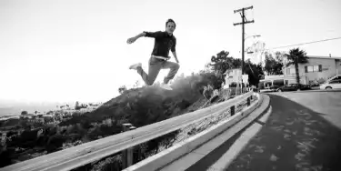
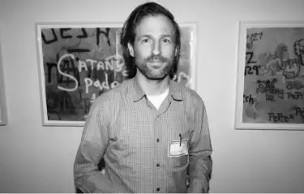
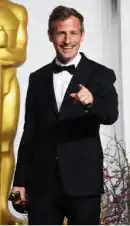

Spike Jonze, de son vrai nom Adam Spiegel, est un
célèbre réalisateur et acteur américain. En 22 ans de
carrière, ce quarantenaire a fait parler de lui. Plusieurs
fois nominés dans des festivals il s’est vu récompenser
pour son travail.
Retour sur le parcours d’une star d’Hollywood…

Spike Jonze - Interview Magazine
Le sport et la musique
Spike Jonze a commencé sa carrière dans le
monde du sport. Étant passionné de BMX et
skateboard il s’illustre d’abord en faisant des
vidéos sur le sujet. Il sera photographe pour un
magazine de BMX et deviendra le vidéaste de la
célèbre marque de skateboard “Girl &
Chocolate”.
Il sortira “VideoDays” en 1991 qui sera sa
première réussite.
Quoi de mieux pour un passionné ?
En parallèle il réalise les clips de plusieurs
artistes tels que The Beastie Boys, The
Notorious B.I.G, Daft Punk…
Plus récemment il a réalisé les clips de Kanye
West.
Les débuts de sa carrière
Adam Spiegel commença sa carrière d’acteur au
cinéma en 1994. Son premier rôle était dans le
film My Crazy Life (Mi vida loca) d'Allison Anders.
Il y jouait le rôle d’un drogué (sympa pour
commencer).
Il réalisera la même année son premier court-métrage “Ciao L.A.”.
Cinq ans plus tard il réalise son premier long
métrage “Dans la peau de John Malkovich". Il
sera basé sur un scénario de Charlie Kaufman
avec qui il travaille beaucoup. Ce fut un succès
qui sera nommé sept fois dans les festivals. Dont
une nomination pour “meilleur réalisateur” aux
Oscar 2000. Il sera récompensé à deux reprises
au festival du cinéma américain de Deauville.
En 1999, il jouera avec Mark Wahlberg, George
Clooney et le rappeur Ice Cube dans Rois du
désert.

Spike Jonze - Clash Magazine
Son ascension au début du 21° siècle
Il connait une ascension entre 2000 et 2013 où il
réalisera son plus grand chef-d’oeuvre.
En 2000, il commence à produire une série
intitulée “Jackass”. Une série dans laquelle un
groupe d’amis se donnent des défis plus fous
les uns que les autres. Un remake français de
Jackass sortira en 2004 sous le nom de “Les
Onze Commandements”. Il produira plusieurs
volets de cette série.
En 2003, il réalise son deuxième long-métrage
et deuxième succès “Adaptation”. Spike Jonze
verra son oeuvre nommée dans 8 catégorie et
se verra récompensé du Grand Prix du jury (Ours
d’Argent).
“Je n’ai pas cherché à faire un film pour les
enfants ; j’ai voulu faire un film sur
l’enfance”
Six ans plus tard il sort l’adaptation du livre “Max
et les Maximonstres”. Ce fut encore un succès.
En 2011, son court-métrage “Mourir auprès de
toi” (coréalisé avec Simon Cahn) se voit nommé
5 fois également.
Mais c’est en 2013 que sa carrière explosera.

Spike Jonze lors de la 86ème édition de la cérémonie des Oscars
Son plus gros succès : HER
En 2013 il sort ce drame romantique dans lequel
le héros (Théodore Twombly) tombe amoureux
de son système d’exploitation (Samantha).
Les personnages principaux seront par Joaquin
Phoenix et Scarlett Johansson.
Un film qui fut le plus grand chef-d’oeuvre de sa
carrière.
Il sera nommé 11 fois et qui sera récompensé à
deux reprises. La première pour le Meilleur
Scénario aux Golden Globes. Et aux Oscars pour
le Meilleur Scénario Original.
Joaquin Phoenix qui sera extra-ordinaire dans ce
film sera nommé 15 fois pour son rôle. Il
remportera aux EDA Awards 2013 le titre de :
Meilleur représentation de la nudité, de la
sexualité ou de la séduction dans un drame
romantique. Il partagera ce titre avec Scarlett
Johansson.
Liste des flims ayant eu le plus de succès